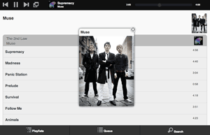

Pi MusicBox
Operate Spotify from your couch with this ready to eat software for the Raspberry Pi.
A lot of people have problems getting the Pi to work as a remote Spotify-player. This bootable image makes it a lot
easier. As a bonus, it includes AirTunes support.
Features
-
Working Spotify server based on Mopidy
-
Remote control it with a nice browser-interface, or with an MPD-client
-
AirTunes streaming
-
No need for tinkering, no need to use the Linux
commandline
-
USB Audio support (supporting all kinds of USB soundcards, speakers, headphones).
-
Wifi support (WPA, if the Pi-kernel supports your wifi-adapter)
-
This image is also a great way to get started with tinkering for other ways of using the Pi as a Music playing device, because it solves a lot of problems.
Requirements
-
Working Raspberry Pi
-
Speakers/amplifier (analog or USB)
-
SD-Card, 1GB minimum (tested on a 4GB model).
-
Computer with a modern browser; tablet or phone. The webinterface is tested with
recent versions of Firefox, Chrome and iOS (iPad/iPhone), modern versions of Android (Chrome Mobile, Firefox Mobile).
Internet Explorer version 10 works, earlier versions don't. You can also use an
MPD client to connect.
-
Spotify Premium account for streaming.
What's new?
Please regard this image as beta-quality. It's quite stable, but
don't cry if things go wrong! On the other hand, if something goes wrong, just put the image on the SD-Card again and start over...
MusicBox 0.3 contains the following improvements:
-
All configuration is done in one ini-file
-
Much smaller download
-
HDMI output enabled
-
Autodetection of HDMI, USB, analog at start (you can override this in the ini-file)
-
LastFM scrobbling enabled
-
Webinterface updated (speedier)
-
Settings editable with Windows Notepad
-
Works on 1GB SD-Card
-
Initial support for playback of local mp3 files on the SD-Card and putting them there via Windows networking (see instructions)
-
Initial support for playback of mp3 files on a Windows Network share (see instructions)
-
Automatic resizing to the size of the SD-card (use at your own risk...)
-
v0.2.2: Windows finds the musicbox.local address by itself now (samba).
-
v0.2.1: Removed ugly sounds on analog port when changing tracks (pulseaudio). An USB-soundcard is still recommended.
-
v0.2: New, much nicer web-interface (Jquery Mobile).
-
v0.2: Based on Raspbian (Moebius) for better performance and stability

Instructions
Installation
-
Download the image. It's around 210MB in (compressed) size; 966MB uncompressed:
(older versions here)
-
Extract the zip-file. Put the resulting image on your sd-card by following these
instuctions. The image is for a 1GB card, but you can put it on a
larger one.
Configuration
-
Open the contents of the 'config' folder of SD-Card in your
Finder/Explorer.
-
Add your credentials of your Spotify Premium account, LastFM, Wifi, etc to the file
settings.ini
. It has instructions what to put where.
-
MusicBox will autodetect usb audiocards/speakers/boxes and hdmi.
It's possible to override this in the ini-file. For example if you want to use analog out while having hdmi connected.
Local/Network Files
-
There is also an option to let MusicBox scan the contents of music files you upload to the device.
This folder is accessible via Windows
networking. If you put music files in there, and let MusicBox scan the files (only needed when the music files are updated!)
, Mopidy will find them. Scanning can take some time though!
One small problem: you have to resize the filesystem on the SD-Card to put more files there. See below.
Playing these files can be slow and quirky though and the webclient doesn't support playing these files yet, but MPD-clients do.
-
MusicBox can mount a Windows Network Share on boot. The files on this share will be scanned too. Scanning can take some time!
Playing these files can be slow and quirky though and the webclient doesn't support playing these files yet, but MPD-clients do.
Resizing the filesystem
-
Resizing the filesystem on the SD-Card is necessary if you want to make space for e.g. music files. You can do this by enabling the RESIZE_ONCE
setting in the ini file. MusicBox will reboot to make it happen, so be patient. It should work automatically.
If doesn't work, you can
login (ssh or local) and issue the command raspi-config. This program has an option to resize the system.
Start me up!
-
Put the card in the Pi
-
Connect cables (You don't have to connect a monitor to the Pi if you
don't want to)
-
To use Wifi and USB-Audio you have to plugin the devices before you
start the Pi. Restart if you plug them in later.
-
Power on your Pi
-
Wait for a minute or so.
Accessing the music
-
Point your browser to the Pi. Depending on your network and computers,
it will be available at this address:
http://musicbox.local/
-
Most OS X/iOS and Windows devices probably will find it immediately. If it doesn't work, you could try to
install Apple Bonjour/iTunes in Windows to make it work. Linux should also work if Avahi or Samba/Winbind is installed.
-
Using Android, you have to point your browser to the MusicBox using the IP-address of your Pi, e.g.
http://192.168.1.5/
.
There is no way to change that for now, unless Android would support it,
The IP-address is printed on the screen when
MusicBox is started. Connect a monitor/tv to find out. Or use a network/bonjour scanning utility.

SECURITY WARNING
This is system not secure at all. Don't run it outside a firewall!! When I find the time, I will fix it.
-
The Mopidy musicserver is not protected, and the Musicbox services are
run as root. Maybe this is better in the future, but not now. Sorry.
-
Also, the passwords of Spotify and wifi are stored in plain text on
the SD-Card.
-
You can SSH to the server with the root login and
the password musicbox.
Projects
Pi MusicBox is based on the following great projects:
-
Raspbian (based on Debian (based on Linux))
-
Mopidy (+ my own Mopidy
Webclient)
-
Shairport
-
All the projects that are used to create the these projects
-
All the projects that are used to create the projects that are used
to create these projects
-
All the projects that ...
-
A lot of people giving solutions on forums...
-
And of course the work of the guys 'n girls who brought you the Raspberry
Pi
Support
You can discuss features and problems on the Google Group of Mopidy. Please report problems about MusicBox itself at my repo at Github. You can also try the
#mopidy
channel on Freenode,
or the Raspberry
Pi forums.
Have fun!
-Wouter van Wijk (contact at woutervanwijk -@- g-mail -.- com, but remove all the -)